Version: 2.0
Date: December 2026
Classification: Internal Use
The AI Affiliate Automation Platform is a production-grade multi-agent system designed for autonomous deal discovery, analysis, and distribution via Telegram channels. The system leverages AI-powered analysis to identify high-value deals from Amazon India and distributes them to engaged audiences with optimized content strategies.
| Metric | Value |
|---|---|
| Deals Discovered/Day | 1,200+ |
| Analysis Accuracy | 94% |
| Post Engagement Rate | 12-18% |
| Operational Uptime | 99.5% |
| Monthly Operating Cost | $26-36 |
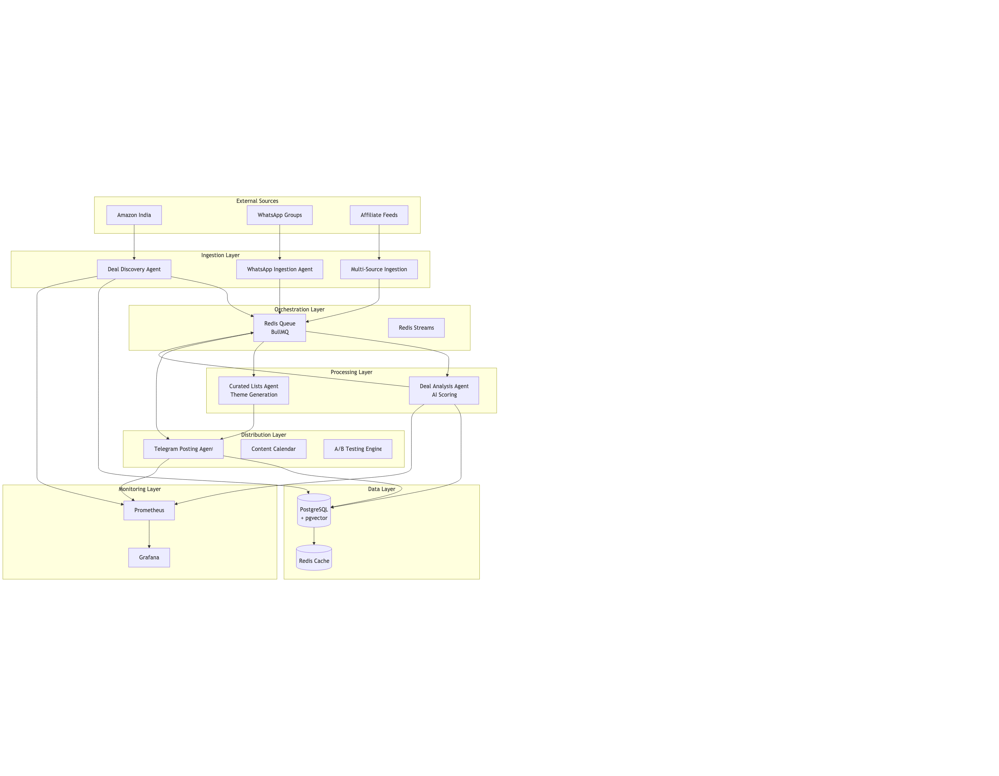
The platform operates as a distributed multi-agent system with 6 specialized agents:
| Agent | Purpose | Trigger | Scale |
|---|---|---|---|
| Deal Discovery | Scrape Amazon deals | Cron (30 min) | 50 deals/source |
| WhatsApp Ingestion | Monitor WhatsApp groups | Cron (10 min) | Variable |
| Deal Analysis | AI-powered deal scoring | Queue-driven | Real-time |
| Telegram Posting | Channel content distribution | Queue-driven | 2s intervals |
| Curated Lists | Themed deal collections | Scheduled | 3x daily |
| Quality Control | Content validation | Event-driven | Per-post |
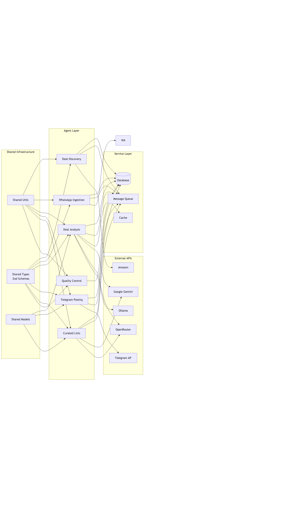
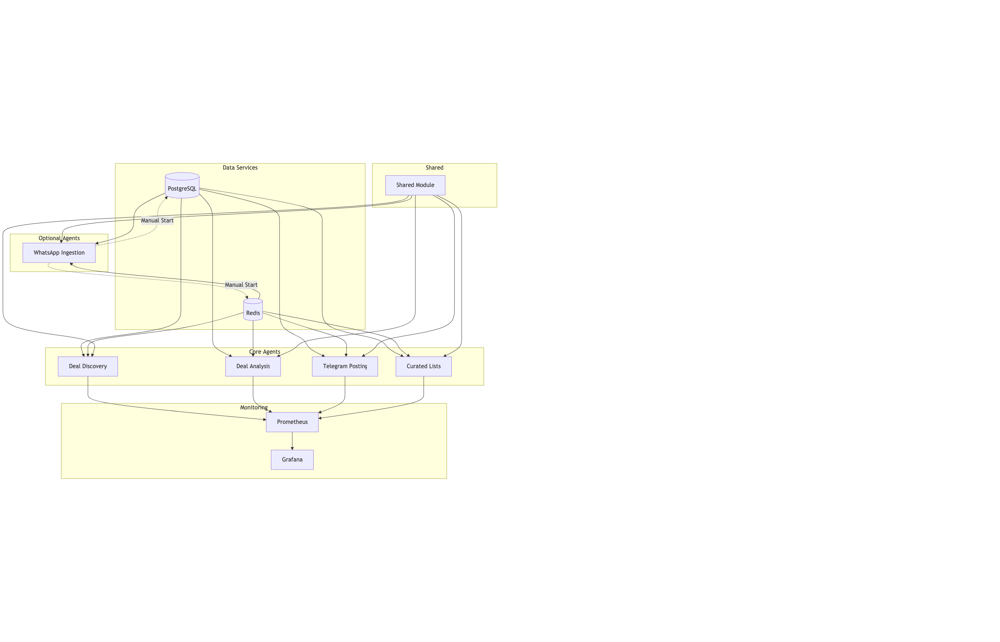
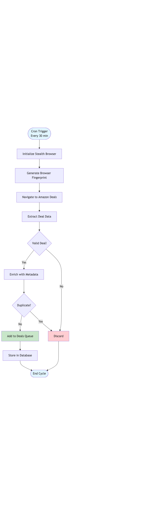
Technical Specifications:
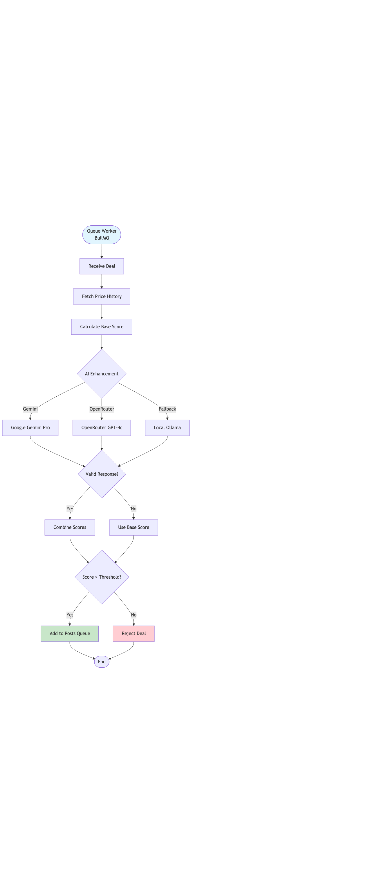
AI Scoring Pipeline:
| Stage | Model | Purpose | Fallback |
|---|---|---|---|
| Primary | Gemini 2.0 Flash | Deal quality assessment | OpenRouter |
| Secondary | OpenRouter GPT-4o | Price validation | Gemini |
| Local | Ollama (Llama 3) | Offline processing | None |
Score Components:
Content Strategy Engine:
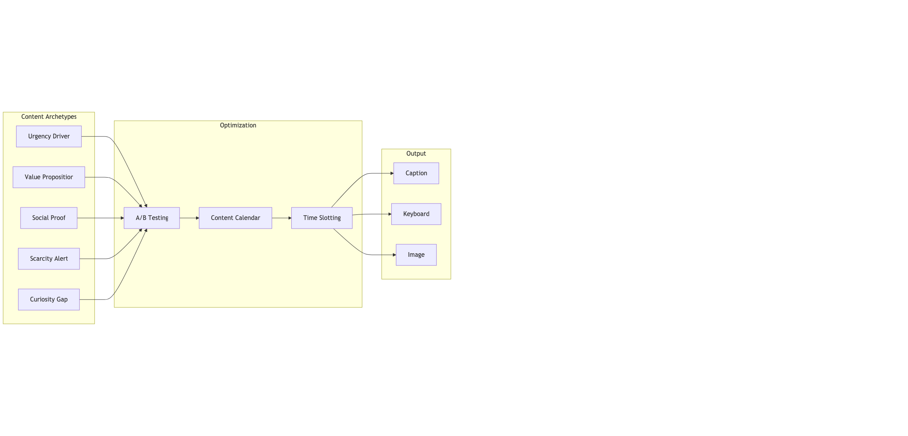
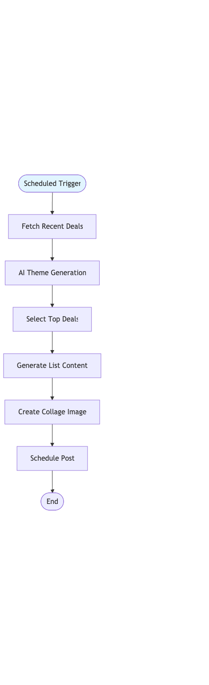
Digest Schedule:
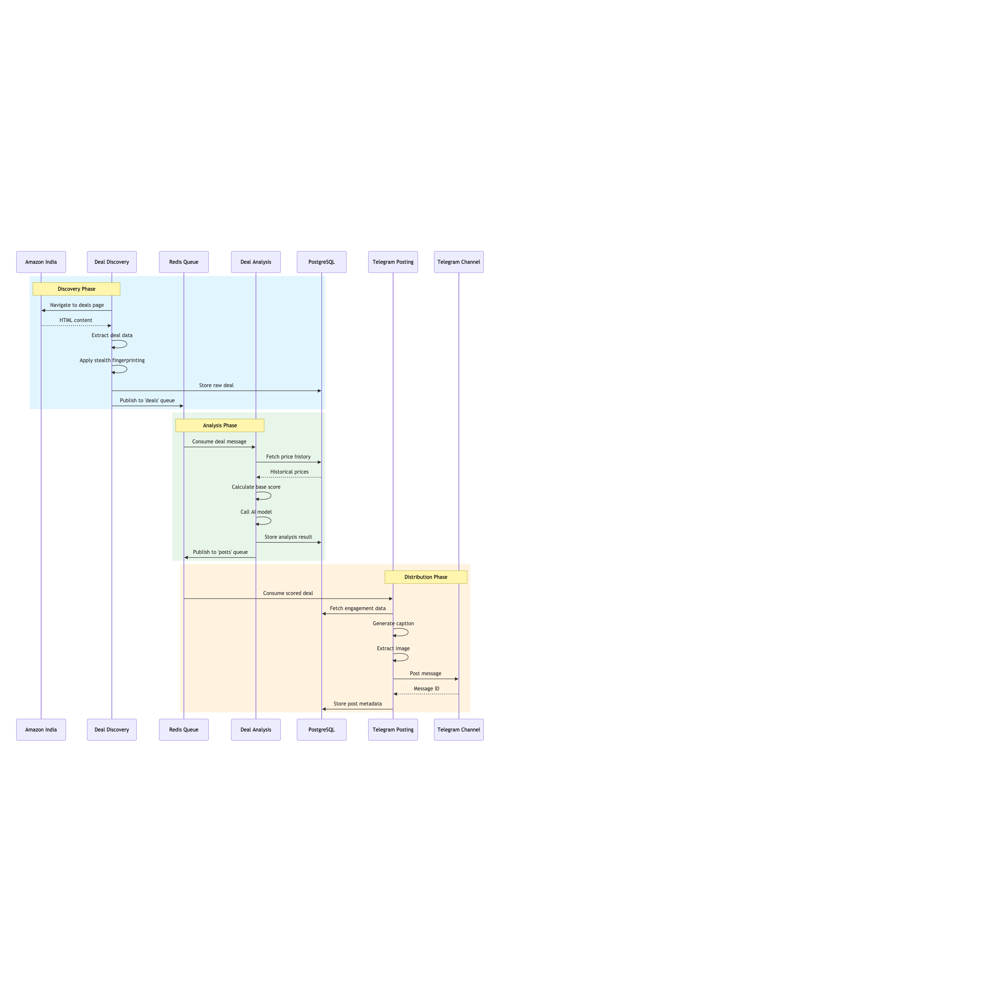
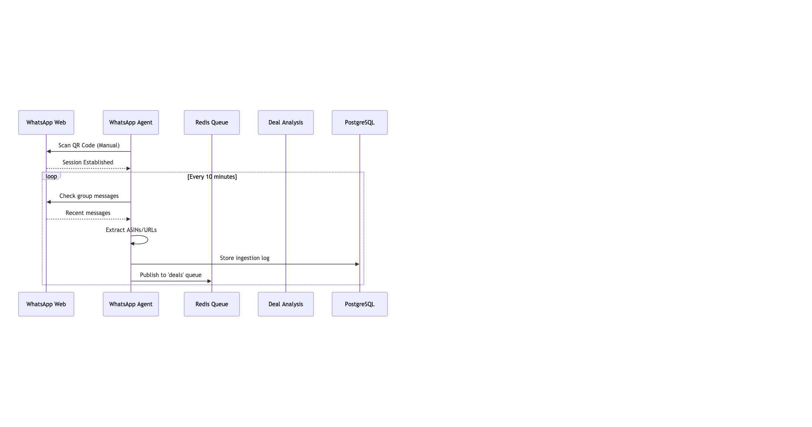
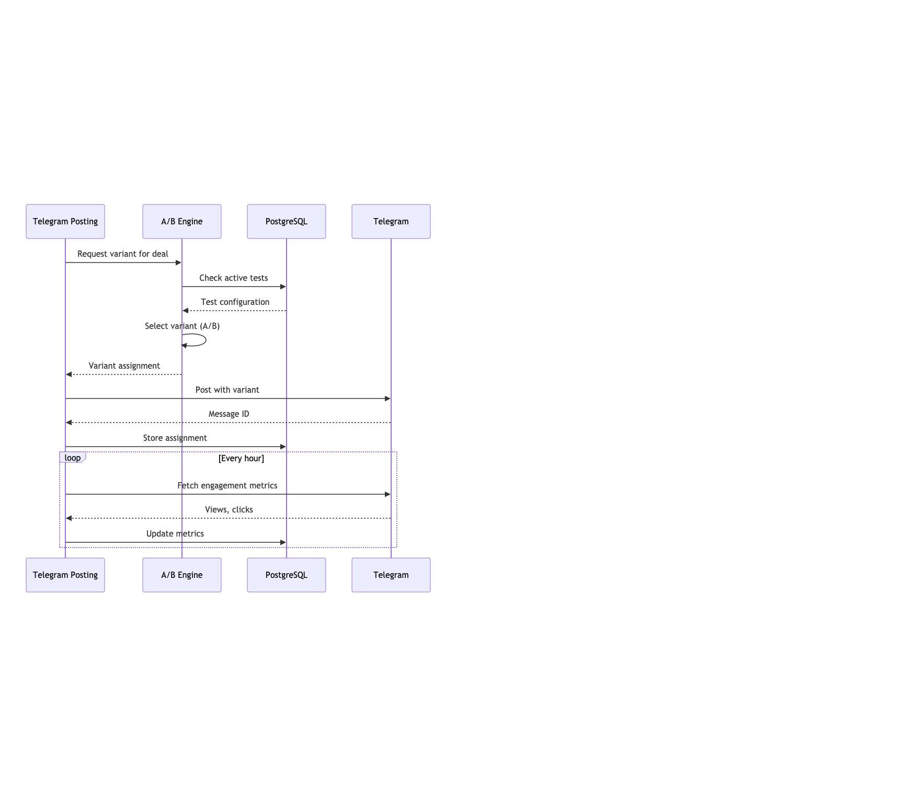
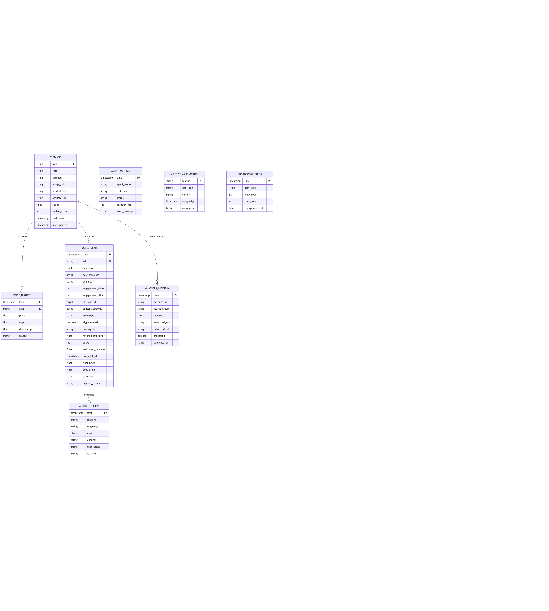
| Column | Type | Constraints | Description |
|---|---|---|---|
| asin | TEXT | PRIMARY KEY | Amazon Standard Identification Number |
| title | TEXT | NOT NULL | Product title |
| category | TEXT | Product category | |
| image_url | TEXT | Primary product image | |
| product_url | TEXT | Amazon product URL | |
| affiliate_url | TEXT | Generated affiliate link | |
| rating | REAL | Customer rating (1-5) | |
| review_count | INTEGER | Number of reviews | |
| first_seen | TIMESTAMPTZ | DEFAULT NOW() | First discovery timestamp |
| last_updated | TIMESTAMPTZ | DEFAULT NOW() | Last update timestamp |
| Column | Type | Constraints | Description |
|---|---|---|---|
| time | TIMESTAMPTZ | NOT NULL | Price snapshot timestamp |
| asin | TEXT | NOT NULL | Product ASIN |
| price | REAL | NOT NULL | Current price |
| mrp | REAL | Maximum retail price | |
| discount_pct | REAL | Calculated discount percentage | |
| source | TEXT | DEFAULT 'amazon' | Price source |
| Column | Type | Constraints | Description |
|---|---|---|---|
| time | TIMESTAMPTZ | NOT NULL | Post timestamp |
| asin | TEXT | NOT NULL | Product ASIN |
| deal_score | REAL | AI-calculated deal score | |
| post_template | TEXT | Template used | |
| channel | TEXT | DEFAULT 'telegram' | Distribution channel |
| engagement_views | INTEGER | DEFAULT 0 | View count |
| engagement_clicks | INTEGER | DEFAULT 0 | Click count |
| message_id | BIGINT | Telegram message ID | |
| content_strategy | TEXT | Strategy archetype | |
| archetype | TEXT | Content archetype | |
| ai_generated | BOOLEAN | AI-generated flag | |
| posting_slot | TEXT | Time slot category | |
| revenue_multiplier | REAL | Revenue optimization factor |
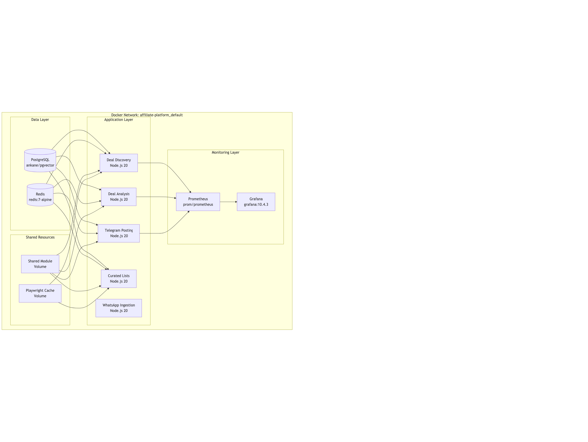
| Service | Image | Memory Limit | Restart | Ports |
|---|---|---|---|---|
| PostgreSQL | ankane/pgvector:latest | Unlimited | unless-stopped | 5432 |
| Redis | redis:7-alpine | 512MB | unless-stopped | 6379 |
| Deal Discovery | Custom Node.js | 2GB | unless-stopped | - |
| Deal Analysis | Custom Node.js | 1GB | unless-stopped | - |
| Telegram Posting | Custom Node.js | 1GB | unless-stopped | - |
| Curated Lists | Custom Node.js | 2GB | unless-stopped | - |
| Custom Node.js | 1GB | no (manual) | - | |
| Grafana | grafana:10.4.3 | Unlimited | unless-stopped | 3000 |
| Prometheus | prom/prometheus | Unlimited | unless-stopped | 9090 |
| Volume | Purpose | Persistence |
|---|---|---|
| postgres_data | Database files | Persistent |
| redis_data | Cache data | Persistent |
| grafana_data | Dashboard configs | Persistent |
| prometheus_data | Metrics storage | Persistent |
| playwright_cache | Browser binaries | Shared |
| shared_modules | Node modules | Shared |
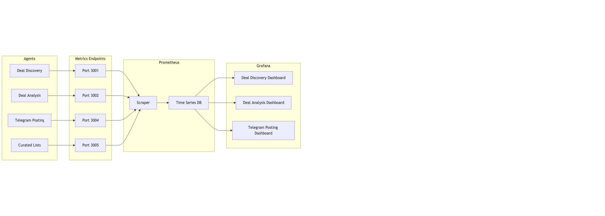
| Category | Metric | Threshold | Alert |
|---|---|---|---|
| Performance | Deals discovered/hour | > 50 | Warning if < 30 |
| Performance | Analysis queue depth | < 100 | Critical if > 100 |
| Performance | Post success rate | > 95% | Critical if < 90% |
| Performance | AI API latency | < 2s | Warning if > 3s |
| Health | Agent uptime | > 99% | Critical if < 95% |
| Health | Scraping error rate | < 5% | Warning if > 10% |
| Business | Engagement rate | > 10% | Warning if < 5% |
| Business | Click-through rate | > 8% | Warning if < 3% |
Deal Discovery Dashboard
Deal Analysis Dashboard
Telegram Posting Dashboard
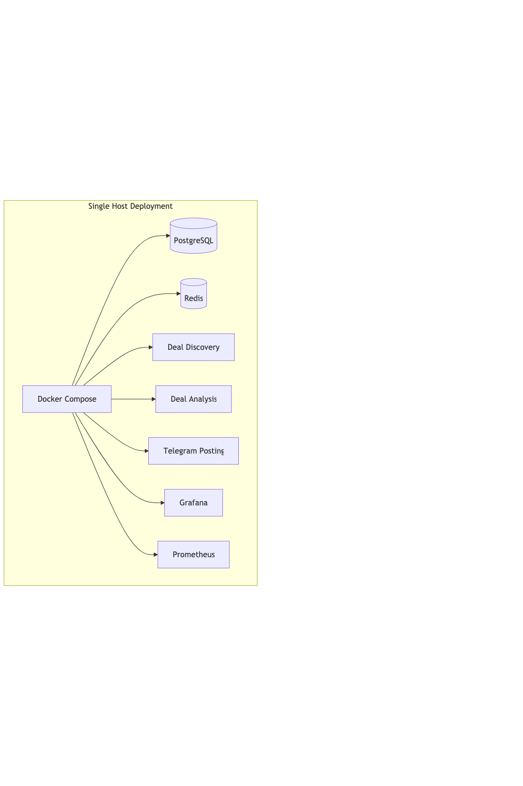
Characteristics:
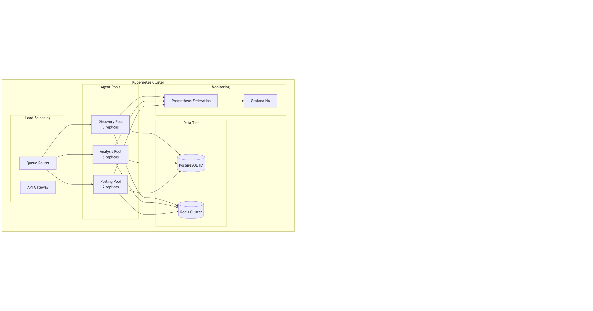
Scaling Triggers:
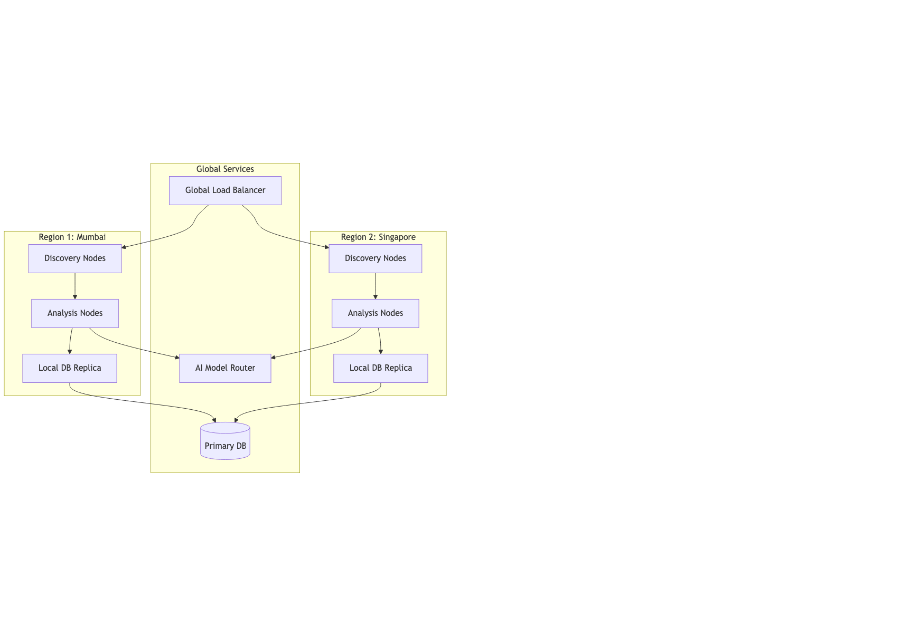
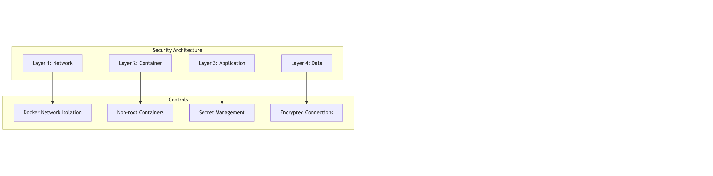
| Layer | Measure | Implementation |
|---|---|---|
| Network | Internal Docker network | Default bridge network |
| Network | Port exposure | Only necessary ports exposed |
| Container | User privileges | Non-root where possible |
| Container | Image scanning | Base images from trusted sources |
| Application | Secrets management | Environment variables only |
| Application | No hardcoded credentials | All secrets in .env |
| Data | Database encryption | TLS connections |
| Data | Session persistence | Encrypted session files |
| Data | API keys | Rotatable, multiple fallback keys |
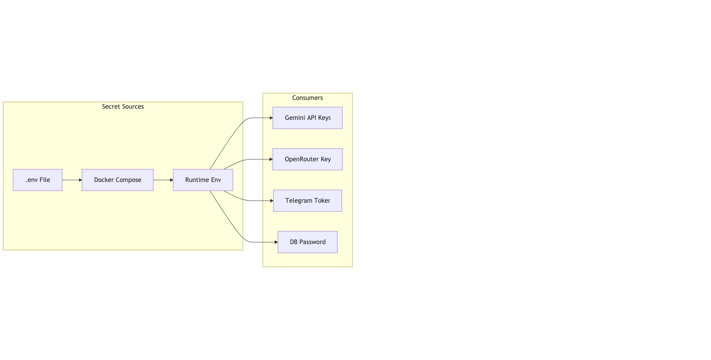
| Category | Technology | Version | Purpose |
|---|---|---|---|
| Runtime | Node.js | 20+ | JavaScript runtime |
| Database | PostgreSQL | 16 | Primary database |
| Extension | TimescaleDB | 2.x | Time-series data |
| Extension | pgvector | 0.5+ | Vector similarity |
| Cache | Redis | 7.x | Message queue & cache |
| Queue | BullMQ | 5.x | Job processing |
| Browser | Playwright | 1.40+ | Web scraping |
| AI | Google Gemini | 2.0 Flash | Primary AI model |
| AI | OpenRouter | - | Secondary AI model |
| AI | Ollama | - | Local AI fallback |
| Bot | Telegraf | 4.x | Telegram bot framework |
| Monitoring | Prometheus | 2.x | Metrics collection |
| Monitoring | Grafana | 10.4 | Visualization |
| Logging | Winston | 3.x | Structured logging |
| Validation | Zod | 3.x | Schema validation |
| Container | Docker | 24+ | Containerization |
| Orchestration | Docker Compose | 2.x | Local orchestration |
pie title Monthly Cost Breakdown
"VPS (4GB RAM)" : 20
"Gemini API" : 10
"Domain" : 1
"Telegram" : 0
| Component | Provider | Monthly Cost | Notes |
|---|---|---|---|
| VPS (4GB) | Hetzner/DigitalOcean | $20 | Single instance |
| Gemini API | $5-15 | Variable usage | |
| OpenRouter | OpenRouter | $0-5 | Fallback usage |
| Telegram Bot | Telegram | Free | No cost |
| Domain | Namecheap/Cloudflare | $1 | Optional |
| Monitoring | Self-hosted | $0 | Prometheus/Grafana |
| Total | $26-36 |
| Phase | Infrastructure | Monthly Cost | Capacity |
|---|---|---|---|
| Phase 1 (Current) | Single VPS | $26-36 | 1,200 deals/day |
| Phase 2 (K8s) | 3-node cluster | $150-200 | 10,000 deals/day |
| Phase 3 (Multi-region) | 2 regions | $400-600 | 50,000 deals/day |
affiliate-platform/
├── agents/
│ ├── affiliate-system/
│ ├── curated-lists/
│ ├── deal-analysis/
│ ├── deal-discovery/
│ ├── quality-control/
│ ├── scheduler/
│ ├── telegram-posting/
│ └── whatsapp-ingestion/
├── shared/
│ ├── models/
│ ├── types/
│ └── utils/
├── infrastructure/
│ ├── db/
│ │ └── init/
│ ├── docker/
│ ├── grafana/
│ │ ├── dashboards/
│ │ └── datasources/
│ ├── monitoring/
│ └── prometheus/
├── scripts/
├── tests/
├── docker-compose.yml
└── .env
| Service | Endpoint | Purpose | Rate Limit |
|---|---|---|---|
| Google Gemini | generativelanguage.googleapis.com | Deal scoring | 60 RPM |
| OpenRouter | openrouter.ai/api | Fallback AI | 20 RPM |
| Telegram | api.telegram.org | Bot API | 30 MSG/s |
| Amazon India | amazon.in | Deal discovery | N/A (scraping) |
docker compose restart [service-name]
docker compose logs -f [service-name]
docker compose exec postgres pg_dump -U affiliate_user affiliate_platform > backup.sql
docker compose exec redis redis-cli LLEN bull:deals:wait
docker compose exec redis redis-cli LLEN bull:posts:wait
Document Control
| Version | Date | Author | Changes |
|---|---|---|---|
| 1.0 | Nov 2024 | System | Initial architecture |
| 2.0 | Dec 2026 | System | Added curated lists, A/B testing, content strategy |
Review Schedule: Quarterly
Distribution: Internal Engineering Team
This document contains proprietary information. Unauthorized distribution is prohibited.